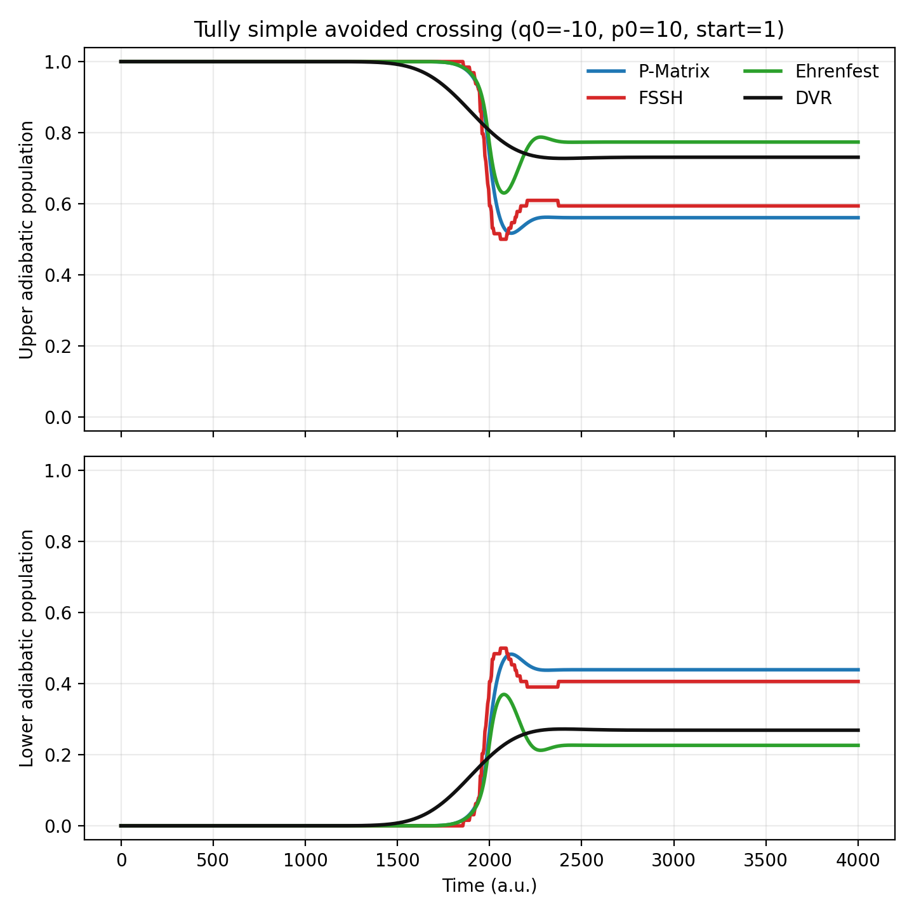
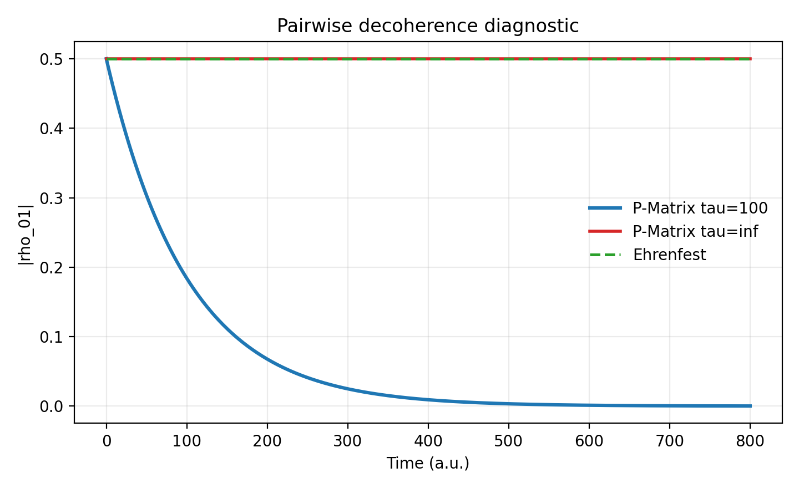
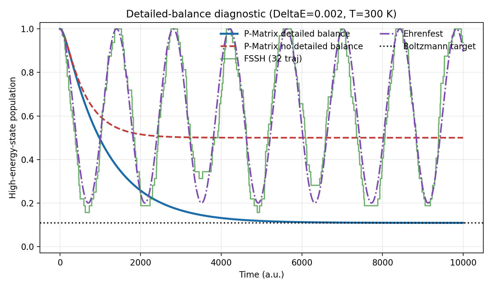
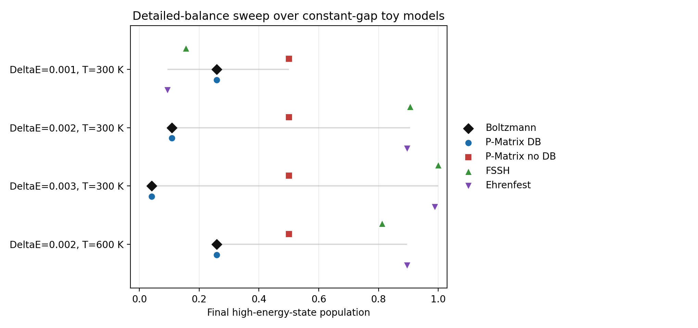

MQC Series - Part III
P-Matrix Decoherence and Detailed Balance
Parts I and II compared two standard mixed quantum-classical closures: stochastic active surfaces in FSSH and one mean-field path in Ehrenfest dynamics. This note adds a density-matrix alternative, the P-Matrix method, and asks a narrower question: can a compact toy model expose the two corrections for which the method was designed, namely pairwise decoherence and detailed balance?
Why Another MQC Method?
Standard MQC methods are useful because they make nonadiabatic dynamics affordable, but they leave two related problems exposed. The first is electronic overcoherence. Ehrenfest dynamics propagates one electronic density matrix on one nuclear trajectory, so off-diagonal elements can survive long after different nuclear wavepacket components should have separated. FSSH partly avoids this by assigning each trajectory an active surface, but the auxiliary electronic wavefunction is still coherent unless an extra decoherence correction is added.
The second problem is detailed balance. A method used for carrier cooling, charge relaxation, or long-time state populations should not heat the electronic subsystem indefinitely; at thermal equilibrium, upward and downward transitions must satisfy a Boltzmann ratio. Mean-field dynamics has no built-in mechanism enforcing that ratio. Surface hopping can reject energetically forbidden upward hops through velocity rescaling, but once decoherence corrections, NBRA trajectories, or wavefunction-collapse rules are added, detailed balance becomes a separate practical constraint rather than a simple consequence of the equations.
The P-Matrix method was proposed to address these two issues in one deterministic density-matrix framework. It keeps the convenience of density matrices, where each pair of states can have its own decoherence time \(\tau_{ij}\), but rewrites the off-diagonal element into directed components so that energy-increasing and energy-decreasing population flow can be treated differently. This directed bookkeeping is what makes it possible to damp pairwise coherence and apply a Boltzmann penalty to upward transfer without introducing a new stochastic collapse event for every trajectory.
In practical terms, the method is most attractive for problems where the nuclear motion is supplied by an external or reference trajectory, as in NBRA-style carrier dynamics, and the main observable is electronic relaxation rather than chemical branching. The toy calculations below are not meant to replace full molecular benchmarks. They isolate the two design goals: whether \(|\rho_{ij}|\) decays when a finite \(\tau_{ij}\) is supplied, and whether the high-energy-state population approaches the Boltzmann target when detailed balance is enabled.
Project Summary
The implementation was added to the local toymodel package as a new PMatrix method. It shares the same model, distribution, recorder, and plotting workflow used by the FSSH and Ehrenfest notes, so the method can be placed into the existing MQC test matrix without changing the Tully models or the DVR reference code. Two scripts were used:
- a Tully simple avoided-crossing comparison against FSSH, Ehrenfest, and DVR;
- a controlled constant-gap two-state diagnostic that isolates decoherence and detailed balance.
The first calculation is a workflow check on a familiar scattering problem. The second is the sharper test: it deliberately removes geometric complications and asks whether the long-time high-energy-state population approaches the Boltzmann target when detailed balance is enabled.
P-Matrix Principle
For adiabatic states \(\phi_i(R(t))\), the ordinary electronic density matrix obeys
A direct density matrix can damp coherences through \(-D_{ij}/\tau_{ij}\), but it does not distinguish the two transition directions hidden inside one off-diagonal element. The P-Matrix construction rewrites
Here \(P_{ij}\) is a directed object: it represents the part of the coherence associated with pumping population from state \(j\) toward state \(i\). For \(i\ne j\), the implementation uses the Kang-Wang form
The diagonal equation keeps the original coherent population flow and adds a Boltzmann correction to the energy-increasing part. In the electron convention used here, upward transitions are multiplied by \(\exp[-|\Delta E|/(k_BT)]\). This is the step that makes the long-time population ratio approach
The implementation also keeps a nuclear-force switch. The default density option uses a density-matrix mean force for ordinary toy-model back reaction. The free and reference options are closer to the NBRA spirit of the original paper, where the electronic density matrix is propagated along a prescribed nuclear trajectory.
SAC Workflow Check
The first test reuses Tully's simple avoided crossing from Parts I and II. The initial condition is \(q_0=-10\), \(p_0=10\), \(M=2000\), and the initial adiabatic state is the upper state. P-Matrix, FSSH, and Ehrenfest use the same classical starting point; DVR propagates a finite-width Gaussian wavepacket on the two-channel grid Hamiltonian. The P-Matrix run uses \(\tau=200\), \(T=300\) K, \(\Delta t=5\), and ten electronic substeps per nuclear step.

At the final time, the upper-state populations are 0.561 for P-Matrix, 0.594 for FSSH, 0.774 for Ehrenfest, and 0.731 for DVR. The spread is useful as a workflow comparison, but it also shows why a separate diagnostic is needed: DVR is a coherent closed-system reference, while P-Matrix is designed to add decoherence and detailed balance.
Pairwise Decoherence Diagnostic
The decoherence test removes population transfer by setting the derivative coupling to zero and initializes a pure coherent superposition,
With \(\tau=\infty\), both P-Matrix and Ehrenfest retain \(|\rho_{01}|=0.5\). With \(\tau=100\), P-Matrix damps the off-diagonal element exponentially while keeping the diagonal population normalized.

Detailed Balance Diagnostic
The detailed-balance test uses a two-state adiabatic model with a constant energy gap \(\Delta E=0.002\), constant derivative coupling, fixed nuclear velocity, and \(T=300\) K. It is intentionally artificial: the goal is to isolate whether the electronic dynamics reaches the correct thermal ratio. The Boltzmann target for the high-energy population is

Model Sweep
The same diagnostic was repeated for four constant-gap cases. Each row in the figure below is one model, and the black diamond is the Boltzmann target. The blue P-Matrix detailed-balance point nearly overlaps the target in every case. The no-DB P-Matrix point stays near 0.5, as expected for a symmetric continuously coupled two-state problem. FSSH and Ehrenfest are included on the same plot to show that this particular diagnostic is not a scattering benchmark; without an explicit detailed-balance correction, neither method is forced to relax to the thermal ratio.

Numerical Values
| Case | Boltzmann | P-Matrix DB | P-Matrix no DB | FSSH | Ehrenfest |
|---|---|---|---|---|---|
| \(\Delta E=0.001, T=300\) | 0.258729 | 0.258734 | 0.500000 | 0.156250 | 0.094054 |
| \(\Delta E=0.002, T=300\) | 0.108596 | 0.108673 | 0.500000 | 0.906250 | 0.896005 |
| \(\Delta E=0.003, T=300\) | 0.040787 | 0.041068 | 0.500000 | 1.000000 | 0.988677 |
| \(\Delta E=0.002, T=600\) | 0.258729 | 0.258737 | 0.500000 | 0.812500 | 0.896005 |
Interpretation
The results separate three claims. First, the P-Matrix implementation can be inserted into the existing toymodel MQC workflow and compared with FSSH, Ehrenfest, and DVR on Tully SAC. Second, finite \(\tau_{ij}\) produces the intended pairwise decay of off-diagonal density-matrix elements. Third, the directed \(P_{ij}\) variables make it possible to apply a Boltzmann penalty to energy-increasing transfer and recover the correct two-state thermal ratio in a controlled diagnostic.
The constant-gap diagnostic should not be read as a universal ranking of FSSH or Ehrenfest. It is constructed to expose detailed balance under continuous coupling, not to reproduce a physical scattering experiment. Its value is that it cleanly shows what the P-Matrix correction enforces and what the uncorrected closures do not enforce by themselves.
Code used in this note
- p_matrix.py is the
toymodel.methods.PMatriximplementation, including directed \(P_{ij}\) propagation, decoherence times, detailed-balance correction, and nuclear-force options. - pmatrix_sac_comparison.py runs the SAC comparison against P-Matrix, FSSH, Ehrenfest, and DVR.
- pmatrix_decoherence_balance_demo.py runs the pairwise-decoherence and detailed-balance diagnostics.
- pmatrix-sac-comparison-summary.csv stores the final SAC population comparison.
- pmatrix-decoherence-balance-summary.csv stores the compact diagnostic values quoted above.
- pmatrix-detailed-balance-sweep.csv stores the four-case detailed-balance sweep.
References
- Kang and Wang, Phys. Rev. B 99, 224303 (2019).
- Tully, J. Chem. Phys. 93, 1061 (1990).
- Crespo-Otero and Barbatti, Chem. Rev. 118, 7026 (2018).